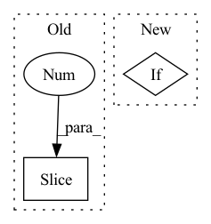

Pattern ID :1528
Before Change
// Convblocks
self.models.append(
nn.Sequential(
*layer_list[:4 ]
)
)
// FCAfter Change
spatial = 1
input_channel = 256
out_channel = input_channel // (compress_ratio // 4)
elif :
// No spatial compression
spatial = 0
input_channel = 2048
out_channel = input_channel // (compress_ratio)
In pattern: SUPERPATTERN
Frequency: 3
Non-data size: 2
Instances Fragment ID: 4144555
Project Name: wesleyhsieh0806/c3-sl
Commit Name: f86fb7a63a6de4dd7f7b9620adea791e892b57d1
Time: 2021-09-13
Author: b06901053@ntu.edu.tw
File Name: CIFAR10/BottleNet++/model.py
M Class Name: SplitResNet50
N Class Name: SplitResNet50
M Method Name: __init__(5)
N Method Name: __init__(3)
M Parent Class: nn.Module
N Parent Class: nn.Module
M File Name: CIFAR10/BottleNet++/model.py
N File Name: CIFAR10/BottleNet++/model.py
M Start Line: 148
M End Line: 159
N Start Line: 74
N End Line: 130
Before Change
"E": [64, 64, "M", 128, 128, "M", 256, 256, 256, 256, "M", 512, 512, 512, 512, "M", 512, 512, 512, 512],
}
self.filter[type] = [int(i * width_mult) if i != "M" else i for i in self.filter[type]][:-1 ] + [512]
// define VGG-19 feature extractor layers
if self.input_shape > 64:After Change
// AutoSC mode is built on the human-designed network *along with* the original resizing layers
if "human" in self.mode:
layers += [nn.MaxPool2d(2, 2)]
elif :
layers += [nn.MaxPool2d(2, 2, ceil_mode=True)]
else:
// Standard mode is built on the human-designed network *without* the original resizing layers
layers += [nn.Conv2d(channel_in, ch, kernel_size=3, padding=1), Fragment ID: 4144554
Project Name: lorenmt/shape-adaptor
Commit Name: 080b6fdad63f71e54ed0fdaa379c604463d0bcb7
Time: 2020-07-31
Author: sk.lorenmt@gmail.com
File Name: model_list.py
M Class Name: VGG
N Class Name: VGG
M Method Name: __init__(7)
N Method Name: __init__(9)
M Parent Class: nn.Module
N Parent Class: nn.Module
M File Name: model_list.py
N File Name: model_list.py
M Start Line: 65
M End Line: 136
N Start Line: 71
N End Line: 146
Before Change
net.append(nn.Conv2d(channels[i], channels[i + 1], kernel_size[i],
padding=kernel_size[i] // 2))
net.append(nn.LeakyReLU(leaky))
net = net[:-1 ] // remove last ReLU
if init_zeros:
nn.init.zeros_(net[-1].weight)
nn.init.zeros_(net[-1].bias)After Change
for i in range(len(kernel_size) - 1):
net.append(nn.Conv2d(channels[i], channels[i + 1], kernel_size[i],
padding=kernel_size[i] // 2))
if actnorm:
net.append(utils.ActNorm((channels[i + 1],) + (1, 1)))
net.append(nn.LeakyReLU(leaky))
i = len(kernel_size)
net.append(nn.Conv2d(channels[i - 1], channels[i], kernel_size[i - 1], Fragment ID: 4144553
Project Name: vincentstimper/normalizing-flows
Commit Name: 9b3bde1f7c9a554b1e571364958858385423209b
Time: 2020-10-19
Author: vincent.stimper@gmail.com
File Name: normflow/nets.py
M Class Name: ConvNet2d
N Class Name: ConvNet2d
M Method Name: __init__(8)
N Method Name: __init__(7)
M Parent Class: nn.Module
N Parent Class: nn.Module
M File Name: normflow/nets.py
N File Name: normflow/nets.py
M Start Line: 73
M End Line: 78
N Start Line: 61
N End Line: 84